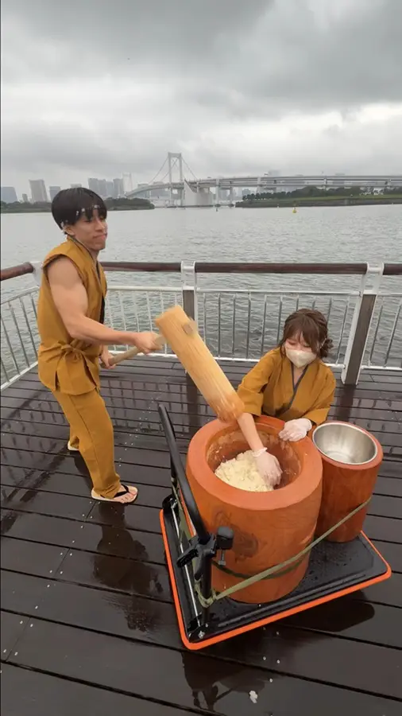
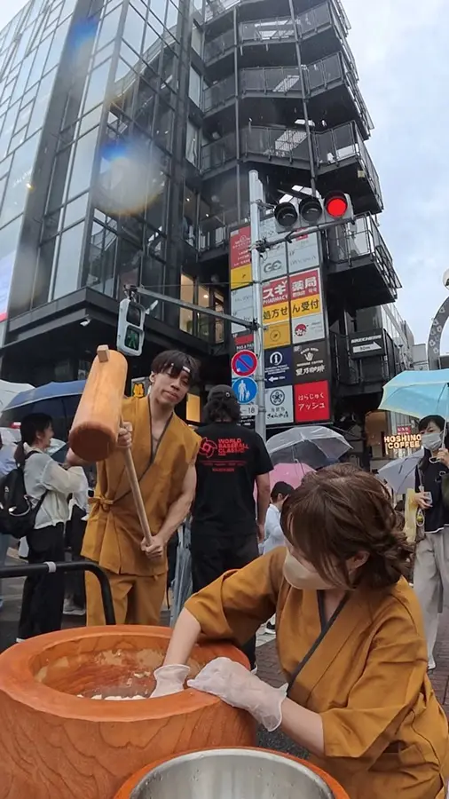
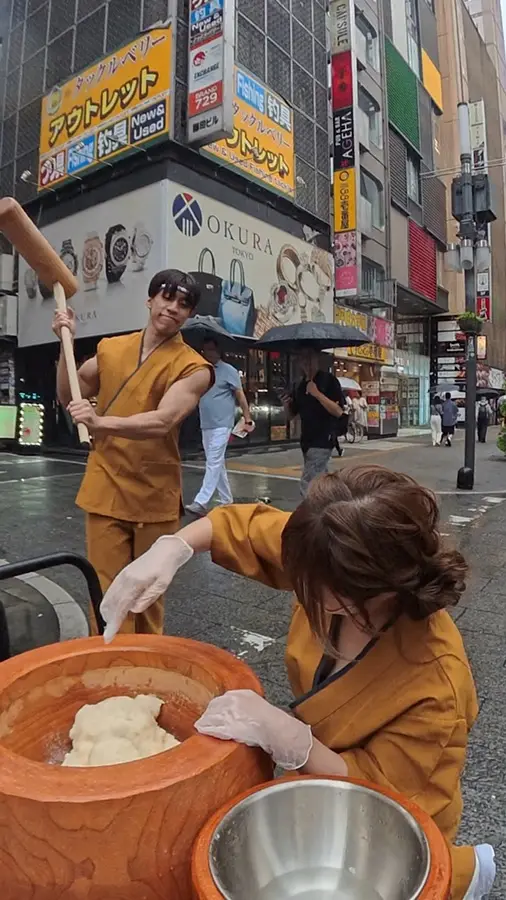
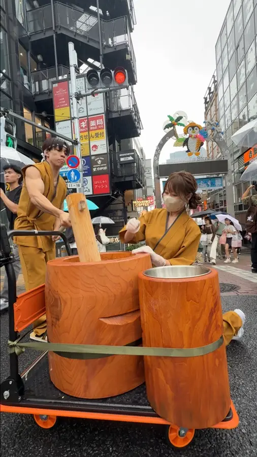

Japanese classic
Matcha Strawberry Mochi
PriceAsk us
A whole strawberry in matcha bean paste, wrapped in fresh-pounded mochi and dusted with Uji matcha.
A wooden mortar, a 90 cm mallet and a crew from Japan. We pound steamed rice into mochi right in front of your guests, wrap it around fresh fruit, and hand it over while it's still warm.
Our mortar rides on a folding cart, so the show sets up anywhere — a waterfront deck, a shopping street, a crossing in Kabukicho.



It's not a snack counter — it's a performance people stop for, film and share.
Glutinous rice is steamed on site.
“YOISHO!” — the crowd joins the call.
Torn and rounded by hand while it's hot.
Wrapped around fresh fruit and sweet filling.
Sliced open to show the cross-section — made for the camera.
刻Each round starts at a set time, every 30–60 minutes — the countdown is what gathers the crowd.
We work with shopping malls, Japan festivals, hotels and brands. You bring the crowd, we bring the mortar.
A 3-day stand in a high-traffic atrium or event space.
A live-show booth that anchors your Japan zone.
Openings, parties and New Year celebrations.

Usually 3 days, with a show every 30–60 minutes. Single-day events are welcome too.
English and Japanese. We prepare menus and signage in the local language for each city.
We rent a wooden mortar locally whenever possible, and arrange shipping when it isn't.
Mochi is very chewy. We serve it in bite-size pieces, post a “chew well” notice and show allergen information in the local language.
Pricing depends on the city, venue and number of days, so please ask us. Send your details through the booking form and we'll reply with a quote.
Tell us your venue, dates and expected footfall — we'll reply with a plan.
Press, collaborations and brand partnerships are welcome too.